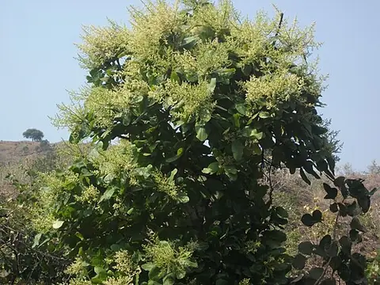

Chironji
Chironji is a wild nut you can forage from April to May in Central forests, East and West coast and Deccan. Dry deciduous forest tree. Small purple fruit with a prized kernel inside.

When is chironji in season in India?
Chironji is usually in season April to May. Timing shifts with weather, latitude and altitude.
Where does chironji grow in India?
Chironji grows in Bihar, Chhattisgarh, Dadra and Nagar Haveli and Daman and Diu, Goa, Gujarat, Jharkhand, Madhya Pradesh, Maharashtra, Odisha, Telangana, West Bengal. Regions: Central forests, East, West coast and Deccan.
How do you recognise chironji?
Dry deciduous forest tree. Small purple fruit with a prized kernel inside.
How do you harvest chironji?
Collect ripe purple fruit in summer, then remove the pulp and dry the stones before cracking.
How do you eat chironji?
Kernels in sweets and kheer, or raw.
How do you store chironji?
Crack, dry and store the kernels airtight for months.
What is chironji good for?
Fat, Protein, Calories.
What can you cook with chironji?
- Makhana kheer: Roasted fox nuts simmered in milk with sugar, cardamom and chironji.
- Chironji barfi: Toasted chironji in a milk and sugar fudge.